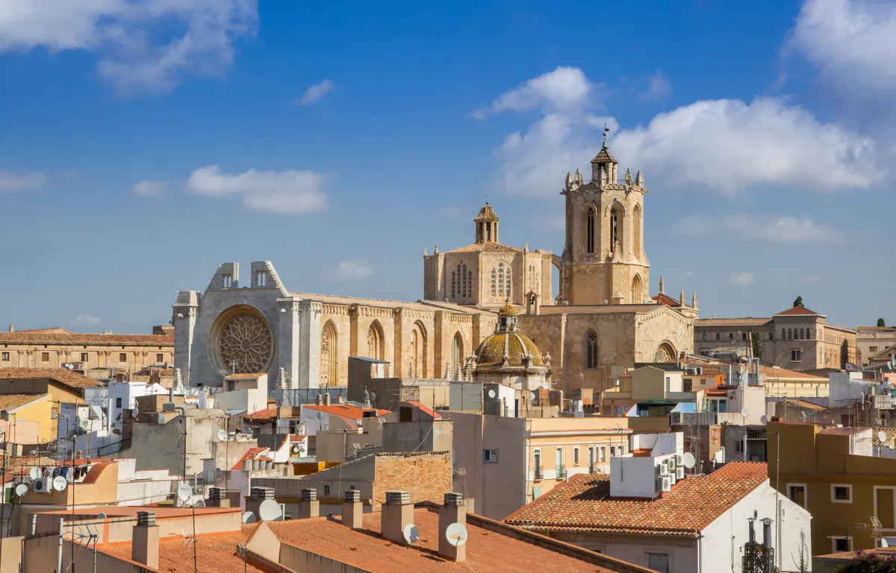
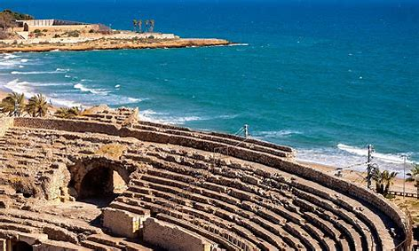
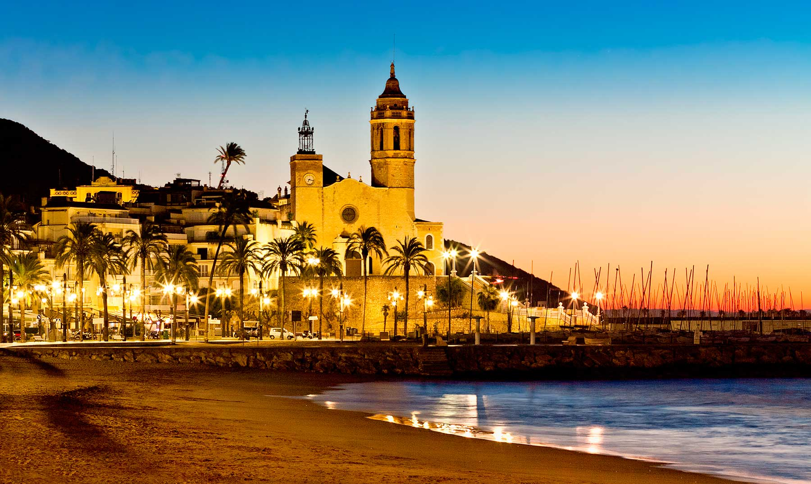
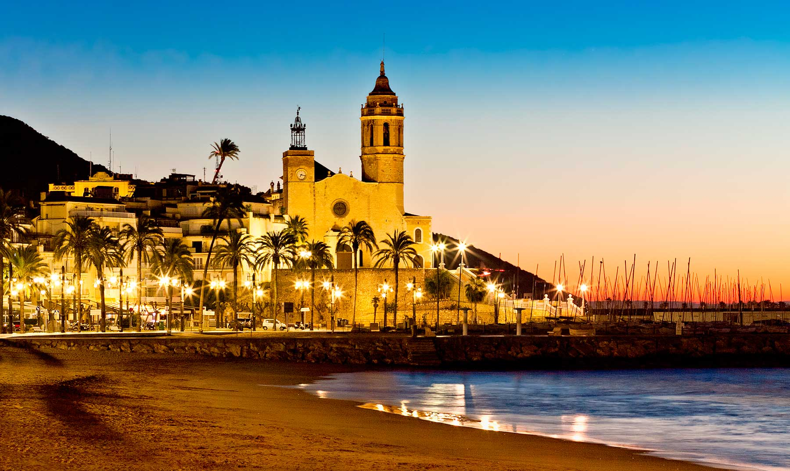
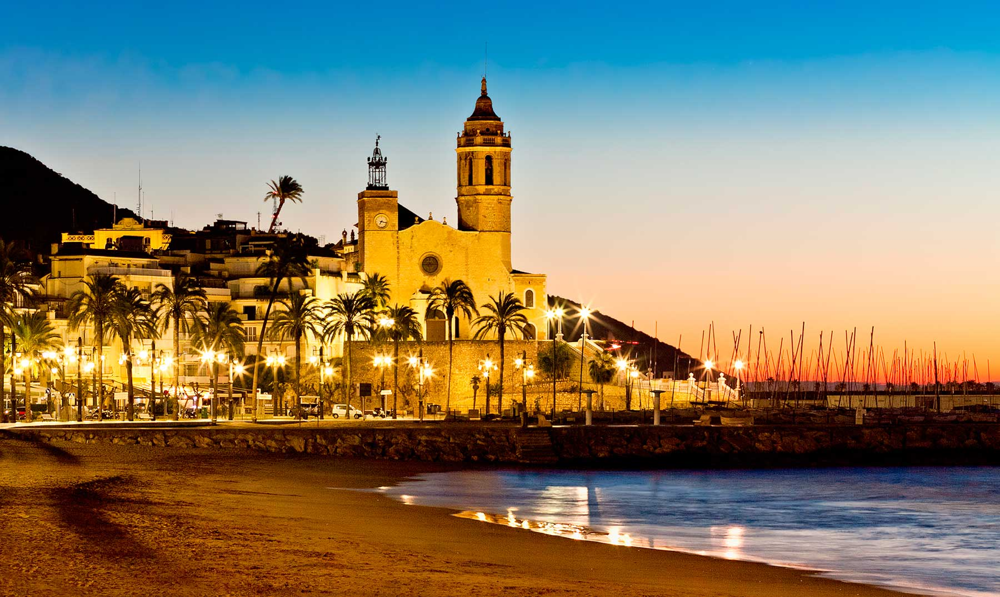
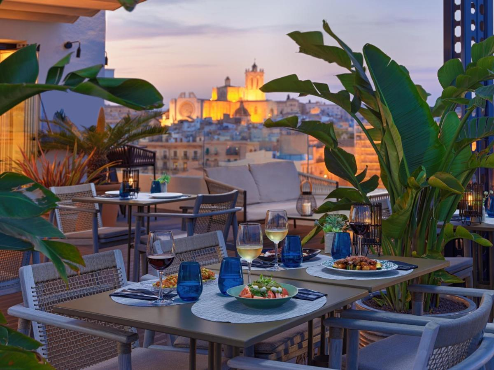
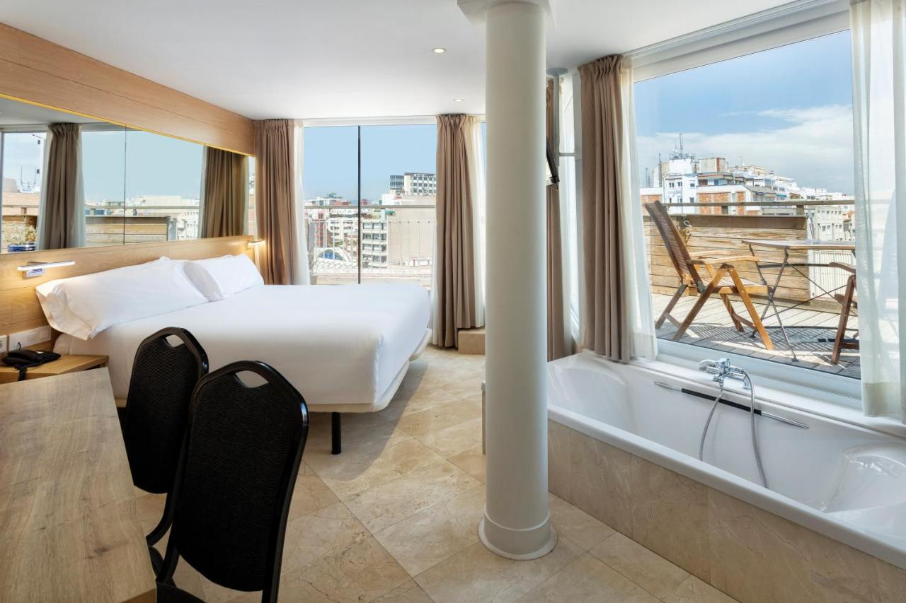
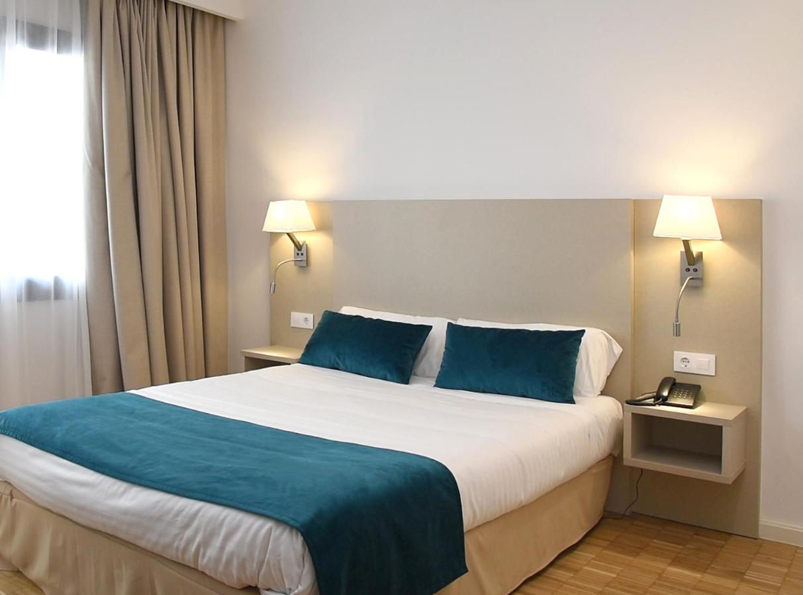

Tarragone


 


Description:
Bienvenue chez VistaVoyage - Ouvrez la Fenêtre sur Tarragone et Laissez Entrer le Soleil !
Que vous soyez un explorateur intrépide, un gourmand insatiable ou simplement en quête de la parfaite excuse pour porter des lunettes de soleil, VistaVoyage est là pour rendre votre séjour à Tarragone mémorable !
Découvrez le Charme Antique :
Avec VistaVoyage, nous ne remontons pas seulement le temps, nous lui offrons un billet aller-retour en première classe ! Explorez Tarragone avec nous, où même les statues romaines semblent s'incliner devant votre sens de l'aventure.
Culinaire Espagnol Exquis :
Préparez-vous à une symphonie de saveurs qui feront de votre estomac le chef d'orchestre de vos vacances. Chez VistaVoyage, nous pensons que manger devrait être aussi excitant que de sauter en parachute, mais avec moins de vent dans les cheveux.
Plages Méditerranéennes à Couper le Souffle :
Nos forfaits balnéaires vous offrent plus que du sable entre les orteils - ils offrent une excuse valable pour dire que vous étiez en "réunion d'affaires importante" (avec un cocktail à la main). VistaVoyage : où la mer Méditerranée devient votre bain à remous privé.
VistaVoyage - parce que la vie est trop courte pour des vacances ennuyeuses. Rejoignez-nous et laissez-nous rendre votre séjour aussi éclatant que votre sourire après une journée à Tarragone. ¡Bienvenido a VistaVoyage! 🌞✈️
Bienvenue chez VistaVoyage - Ouvrez la Fenêtre sur Tarragone et Laissez Entrer le Soleil !
Que vous soyez un explorateur intrépide, un gourmand insatiable ou simplement en quête de la parfaite excuse pour porter des lunettes de soleil, VistaVoyage est là pour rendre votre séjour à Tarragone mémorable !
Découvrez le Charme Antique :
Avec VistaVoyage, nous ne remontons pas seulement le temps, nous lui offrons un billet aller-retour en première classe ! Explorez Tarragone avec nous, où même les statues romaines semblent s'incliner devant votre sens de l'aventure.
Culinaire Espagnol Exquis :
Préparez-vous à une symphonie de saveurs qui feront de votre estomac le chef d'orchestre de vos vacances. Chez VistaVoyage, nous pensons que manger devrait être aussi excitant que de sauter en parachute, mais avec moins de vent dans les cheveux.
Plages Méditerranéennes à Couper le Souffle :
Nos forfaits balnéaires vous offrent plus que du sable entre les orteils - ils offrent une excuse valable pour dire que vous étiez en "réunion d'affaires importante" (avec un cocktail à la main). VistaVoyage : où la mer Méditerranée devient votre bain à remous privé.
VistaVoyage - parce que la vie est trop courte pour des vacances ennuyeuses. Rejoignez-nous et laissez-nous rendre votre séjour aussi éclatant que votre sourire après une journée à Tarragone. ¡Bienvenido a VistaVoyage! 🌞✈️
Vous préférez prendre le temps de vous imprégner de chaque endroit, de vous détendre et d'apprécier tranquillement la beauté historique qui vous entoure, notre formule Historique est faite pour vous. Avec des activités planifiées seulement par demi-journée, vous avez l'opportunité de savourer chaque moment, que ce soit en explorant des sites emblématiques ou en vous relaxant simplement sur une plage idyllique.
Jour 1 :
Matin: Arrivé à Tarragone + quartier libre
Après-midi: Visite guidée du patrimoine romain
Jour 2 :
Matin: quartier libre
Après-midi: Tarragone -> Miravet + Excursion guidée en kayak sur l'Ebre à Miravet + Miravet -> Tarragone
Jour 3 :
Matin: Tarragone -> Plobet + Visite du monastère de Poblet + Plobet -> Tarragone
Après-midi: quartier libre
Jour 4 :
Matin: Tarragone -> Sitges + 1ère partie visite
Midi: Dégustation spécialité local
Après-midi: 2ème partie visite Sitges + Sitges -> Tarragone
Jour 5 :
Journée: quartier libre
Jour 6 :
Matin: Tarragone -> Salou + Safari en quad + Salou -> Tarragone
Après-midi:Retour à l'aéroport
Vous êtes un explorateur dans l'âme, avide de nouvelles expériences et de découvertes passionnantes ? Optez pour notre formule intense, conçue pour ceux qui cherchent à maximiser chaque instant de leur voyage. Des activités palpitantes tout au long de la journée vous attendent, vous plongeant au cœur des destinations exotiques et vous permettant de vivre des moments inoubliables.
Jour 1 :
Matin: Arrivé à Tarragone + quartier libre
Après-midi: Visite guidée du patrimoine romain
Jour 2 :
Matin: Tarragone -> Salou + Safari en quad
Après-midi: Visite privée de Montserrat + Salou -> Tarragone
Jour 3 :
Journée: Tarragone -> Plobet + Visite privée de Poblet, degustation des spécialité + Plobet -> Tarragone
Jour 4 :
Matin: Tarragone -> Sitges + 1ère partie visite
Midi: Dégustation spécialité local
Après-midi: 2ème partie visite Sitges + Sitges -> Tarragone
Jour 5 :
Journée: Activités aquatiques à Tarragone (jet ski + plongée)
Jour 6 :
Matin: Tarragone -> Miravet + Excursion guidée en kayak sur l'Ebre à Miravet + Miravet -> Tarragone
Après-midi:Retour à l'aéroport
| Liste d'hôtels | |||
|---|---|---|---|
| Hôtel n° | images des hôtels | descriptions | notes /10 |
| 1 |  |
H10 Imperial Tarraco 4* Sup : Situé à Tarragone, à moins de 1 km de la plage du Miracle, le H10 Imperial Tarraco 4* Sup propose un jardin, une piscine extérieure, un parking privé et une salle de sport. Cet hôtel 4 étoiles dispose d’une réception ouverte 24h/24, d’un service d'étage et d’une connexion Wi-Fi gratuite. Vous pourrez profiter d’une terrasse, d’un bar sur place et d’un salon commun. Les hébergements possèdent la climatisation, un minibar, une machine à café, un coffre-fort, une télévision à écran plat, un bureau ainsi qu’une salle de bains privative pourvue d’une douche. Les serviettes et le linge de lit sont fournis dans les hébergements du H10 Imperial Tarraco 4* Sup. Le restaurant sur place prépare une cuisine méditerranéenne et européenne. Des plats végétariens, végétaliens et sans produits laitiers sont également disponibles sur demande. |
9/10 |
| 2 |  |
B&B HOTEL Tarragona Centro Urbis : L’établissement 3 étoiles B&B HOTEL Tarragona Centro Urbis vous accueille à Tarragone, à 2 km de la plage Playa de los Cossis et à 2,5 km de la plage Playa de la Arrabassada. Cet hôtel 3 étoiles propose une connexion Wi-Fi gratuite, un bureau d'excursions et une bagagerie. Cet établissement non-fumeurs se trouve à moins de 1 km de la Playa del Miracle. Toutes les chambres de l'hôtel sont équipées d'un coffre-fort et d'une salle de bains privative. |
8.2/10 |
| 3 |  |
Hotel Lauria : Situé à seulement 100 mètres du point de vue Balcón del Mediterráneo, l'Hotel 3 étoiles Lauria se trouve dans la rue principale de Tarragone, la Rambla Nova. Il dispose d'une piscine extérieure et de chambres climatisées avec balcon. Les chambres du Lauria possèdent du parquet et un mobilier en bois foncé. Chacune dispose d'une télévision par satellite à écran plat et d'une connexion Wi-Fi gratuite. L'hôtel sert un petit-déjeuner quotidien dans la salle à manger moderne et vous apprécierez aussi le bar. Plusieurs bons restaurants sont accessibles en 5 minutes à pied. |
7.9/10 |
Information Importante:
A avoir :
A avoir :
- Passeport ou carte d'identité valide
- Carte européenne d'assurance maladie (CEAM)
- Adaptateur de prise électrique
- Assurance voyage